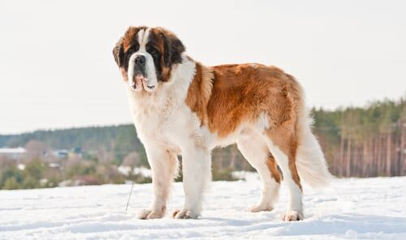
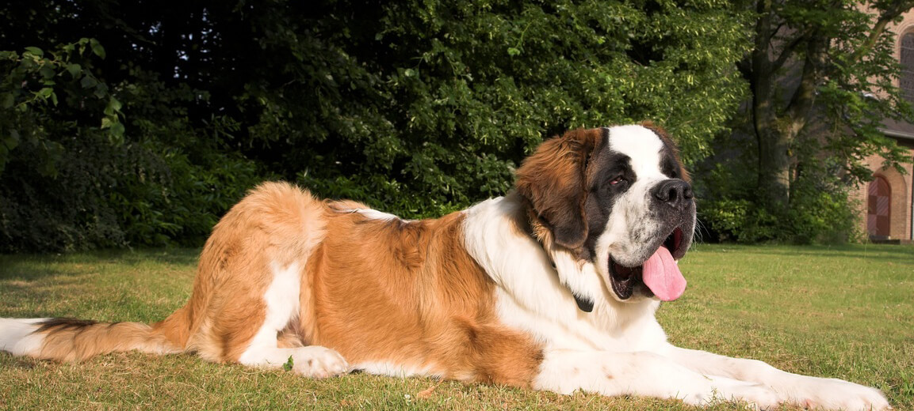

San Bernardo
INTRODUCCIÓN
El San Bernardo es una raza de perro originaria de los Alpes suizos y del norte de Italia. Es el perro boyero más famoso junto con el mastín del Pirineo, y es muy próximo al gran boyero suizo.
Desciende del extinto mastín de los Alpes, que se mezcló con otras razas como el dogo del Tíbet, el terranova y el gran danés.

A continuación, veremos las principales características de este animal:
CARACTERÍSTICAS FÍSICAS
El San Bernardo es un perro grande y poderoso, conocido por su robusta estructura y aspecto imponente. Tiene una cabeza grande y ancha, con un hocico corto y fuerte. Sus ojos son oscuros y expresivos, transmitiendo una mirada amable y noble. Sus orejas son de tamaño mediano, caídas y de forma triangular.
Su pelaje puede ser corto o largo, siempre denso y resistente al frío. Los colores más comunes son blanco con manchas marrón, rojizas o leonadas, con una característica máscara oscura en el rostro.
Posee una musculatura fuerte, patas gruesas y una cola larga y peluda. Su cuerpo está bien proporcionado, lo que le permite moverse con firmeza y equilibrio. Es un perro resistente, ideal para climas fríos y terrenos difíciles.
TEMPERAMENTO
El San Bernardo es un perro de temperamento amigable, tranquilo y leal, conocido por su paciencia y carácter protector. A pesar de su gran tamaño, es una raza afectuosa y sociable, lo que lo convierte en un excelente perro de familia. Su naturaleza gentil lo hace especialmente bueno con los niños, a quienes cuida con instinto protector.
Es un perro inteligente y obediente, aunque a veces puede ser algo testarudo, por lo que el adiestramiento temprano y la socialización son fundamentales para garantizar un comportamiento equilibrado. A pesar de su amabilidad, su tamaño y fuerza imponen respeto, lo que lo convierte en un buen perro guardián sin necesidad de ser agresivo.
El San Bernardo disfruta de la compañía humana y no tolera bien la soledad. Necesita atención, ejercicio moderado y entrenamiento para mantenerse feliz y bien adaptado. Con los cuidados adecuados, es un compañero noble y fiel.

SALUD
El San Bernardo es una raza gigante con una esperanza de vida de 8 a 10 años y requiere cuidados especiales para mantener su salud. Como muchos perros grandes, es propenso a la displasia de cadera y codo, lo que puede afectar su movilidad. También es común la torsión gástrica, una afección peligrosa que puede ser mortal si no se trata a tiempo.
Esta raza puede padecer problemas cardíacos, como la miocardiopatía dilatada, y enfermedades oculares como el entropión, donde los párpados se doblan hacia adentro, causando irritación. Además, el sobrepeso es un problema frecuente, por lo que necesita una alimentación equilibrada y ejercicio moderado.
Para garantizar su bienestar, es fundamental realizar controles veterinarios regulares, evitar el ejercicio intenso después de comer y brindarle un ambiente fresco, ya que son sensibles al calor. Con los cuidados adecuados, el San Bernardo puede disfrutar de una vida saludable y feliz.
Regresar a pantalla principal